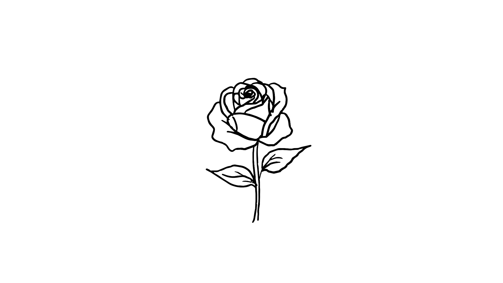

Keep the Original
You decide not to change the rose. Its uneven lines, curved stem, and simple petals are part of what makes it unique.
Not every drawing needs to be perfect. Sometimes the first version carries the most personality because it shows how the drawing was made.
